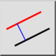
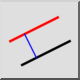
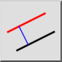
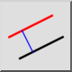

l 平行線（距離指定）
ツールバー/アイコン:
 

メニュー: D 描画 > L 線分 > l 平行線（距離指定）
ショートカット: L, P | P, A
コマンド: lineparallel | lineoffset | parallel | par | lp | pa
ツールバー/アイコン:
 

メニュー: D 描画 > L 線分 > l 平行線（距離指定）
ショートカット: L, P | P, A
コマンド: lineparallel | lineoffset | parallel | par | lp | pa
このツールで、平行線(あるいは同心の弧および円)を作成できます。